We first define a function that simulates the process and run it with some baseline parameters
#series is the function that simulates trajectories of log-normal process
series<-function(r,mu,t,n,v,s0=100){
if(abs((mu-r)/v)<sqrt(n/t)){
set.seed(10) #important to allow replication
step<-t/n
real<-c(log(s0))
p<-(exp((r-mu)*(step))-exp((-v)*sqrt(step)))/(exp((v)*sqrt(step))-exp((-v)*sqrt(step)))
for(i in 1:n){
real[1+i]<-real[i]+v*sqrt(step)*sample(c(-1,1),1,TRUE,prob=c(p,1-p))+mu*step
}
return(real)}#returns the series
else{print("Parameters violate no-arbitrage condition.")
break}
}Let’s start with \(\mu\). Now we want to simulate the process for varying parameters. We are taking a baseline setting in which \(r=5\%\), \(t=1\) and \(\sigma=30\%\) and varying through a sequence of \(\mu\) to simulate trajectories. Note that the no-arbitrage condition that \(abs(\frac{\mu-r}{\sigma})<\sqrt{\frac{N}{T}}\) is satisfied in all cases (also note that the code would warn if it wasnt the case)
funmu<-function(min,max,increment,n){
vec<-seq(min,max,increment)
m<-matrix(NA,nrow=(n+1),ncol=length(vec))
for (i in 1:length(vec)){
for (j in 1:(n+1)){
m[j,i]<-series(r=.05,mu=vec[i],t=1,n,v=.3)[j] #This is the relevant line for selecting the varying parameter (Mu in this case)
}
dat<-cbind(N=c(0:n+1),as.data.frame(m))
names(dat)<-c("N",paste0(vec*100,"%"))
}
datmelt<-melt(dat,id.vars="N")
ggplot(datmelt, aes(x = N, y = value, color=variable))+theme_bw()+xlab("N")+ylab("log_St")+geom_line()+ theme(legend.title = element_blank())+ggtitle("Process simulation with varying drifts (Mu)")
}
#Simulating for a set of drift parameters
funmu(-.06,.06,.015,10)## Warning in melt(dat, id.vars = "N"): The melt generic in data.table has been passed a data.frame and will attempt to redirect to the
## relevant reshape2 method; please note that reshape2 is deprecated, and this redirection is now deprecated as well. To continue using melt
## methods from reshape2 while both libraries are attached, e.g. melt.list, you can prepend the namespace like reshape2::melt(dat). In the
## next version, this warning will become an error.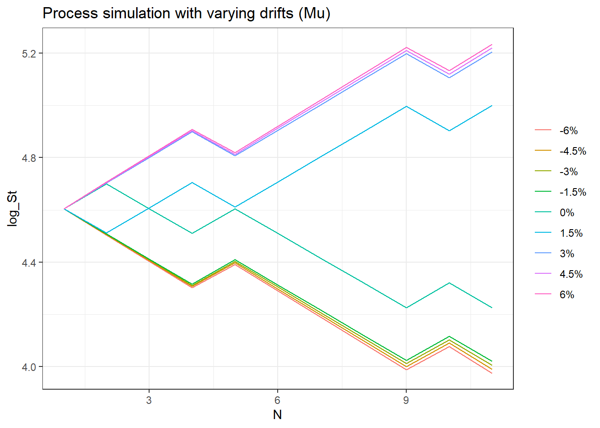
funmu(-.06,.06,.015,100)## Warning in melt(dat, id.vars = "N"): The melt generic in data.table has been passed a data.frame and will attempt to redirect to the
## relevant reshape2 method; please note that reshape2 is deprecated, and this redirection is now deprecated as well. To continue using melt
## methods from reshape2 while both libraries are attached, e.g. melt.list, you can prepend the namespace like reshape2::melt(dat). In the
## next version, this warning will become an error.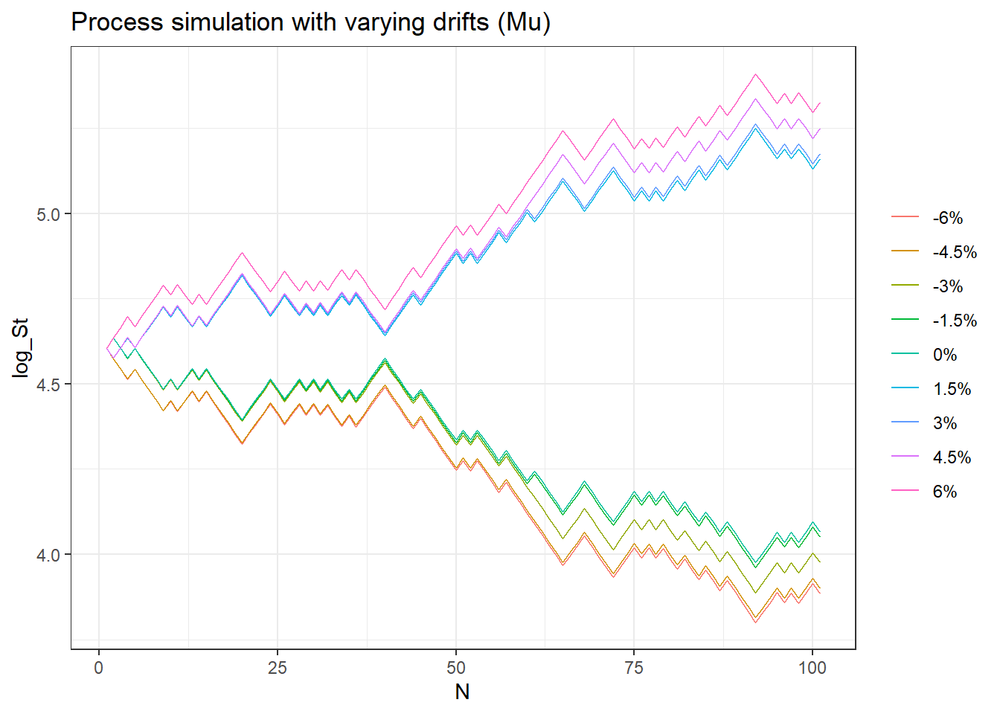
funmu(-.06,.06,.015,1000)## Warning in melt(dat, id.vars = "N"): The melt generic in data.table has been passed a data.frame and will attempt to redirect to the
## relevant reshape2 method; please note that reshape2 is deprecated, and this redirection is now deprecated as well. To continue using melt
## methods from reshape2 while both libraries are attached, e.g. melt.list, you can prepend the namespace like reshape2::melt(dat). In the
## next version, this warning will become an error.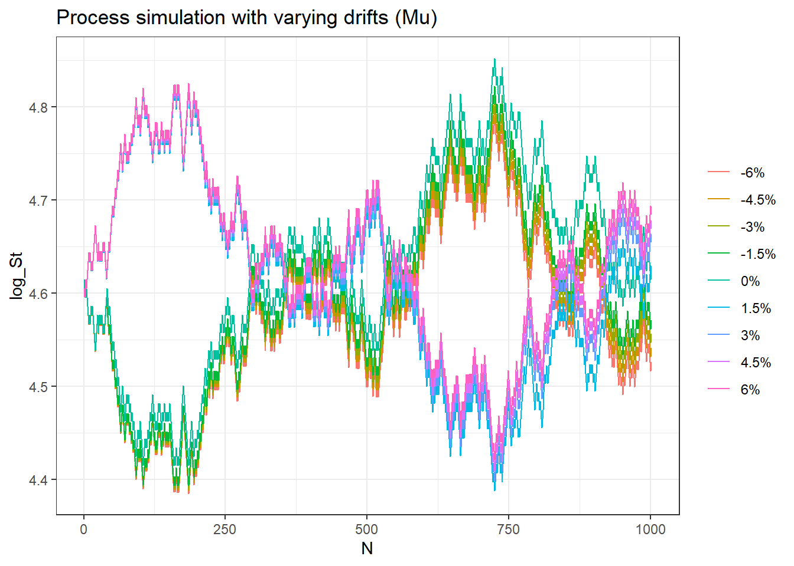
The simulations are symmetric, being the pivot the sign of \(\mu\). For lower N we can see how there exists drift. For positivie \(\mu\) the path of the stock is increasing. In the other case, where \(\mu\) is negative, the process has a negative drift. As \(N\) increases we reach the limiting process, where the drift (\(\mu\)) plays no part. \(S_T\) as N goes to infinity, tends to a a process which is a martingale.
\[S_0e^{\sigma N(0,T)+(r-\frac{1}{2}\sigma^2)T}\]
Now \(\sigma\). We are taking a baseline setting in which \(r=5\%\), \(t=1\) and \(\mu=5.5\%\) and varying through a sequence of \(\sigma\) to simulate trajectories
funsigma<-function(min,max,increment,n){
vec<-seq(min,max,increment)
m<-matrix(NA,nrow=(n+1),ncol=length(vec))
for (i in 1:length(vec)){
for (j in 1:(n+1)){
m[j,i]<-series(r=.05,mu=.055,t=1,n,v=vec[i])[j] #This is the relevant line for selecting the varying parameter (Sigma in this case)
}
dat<-cbind(N=c(0:n+1),as.data.frame(m))
names(dat)<-c("N",paste0(vec*100,"%"))
}
datmelt<-melt(dat,id.vars="N")
ggplot(datmelt, aes(x = N, y = value, color=variable))+theme_bw()+xlab("N")+ylab("log_St")+geom_line()+ theme(legend.title = element_blank())+ggtitle("Process simulation with varying volatilities (Sigma)")
}
#Simulating for a set of volatility parameters
funsigma(.1,.6,.1,10)## Warning in melt(dat, id.vars = "N"): The melt generic in data.table has been passed a data.frame and will attempt to redirect to the
## relevant reshape2 method; please note that reshape2 is deprecated, and this redirection is now deprecated as well. To continue using melt
## methods from reshape2 while both libraries are attached, e.g. melt.list, you can prepend the namespace like reshape2::melt(dat). In the
## next version, this warning will become an error.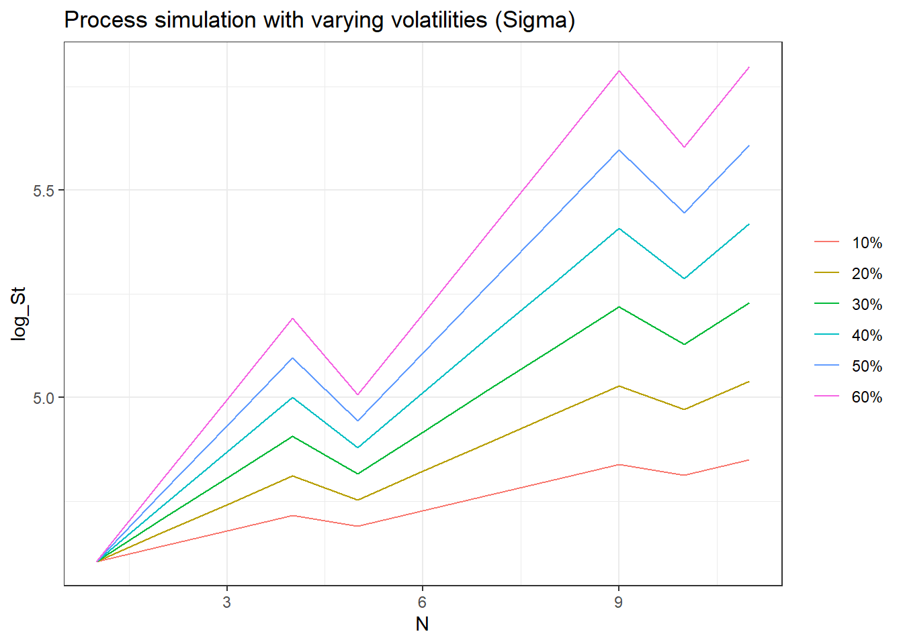
funsigma(.1,.6,.1,100)## Warning in melt(dat, id.vars = "N"): The melt generic in data.table has been passed a data.frame and will attempt to redirect to the
## relevant reshape2 method; please note that reshape2 is deprecated, and this redirection is now deprecated as well. To continue using melt
## methods from reshape2 while both libraries are attached, e.g. melt.list, you can prepend the namespace like reshape2::melt(dat). In the
## next version, this warning will become an error.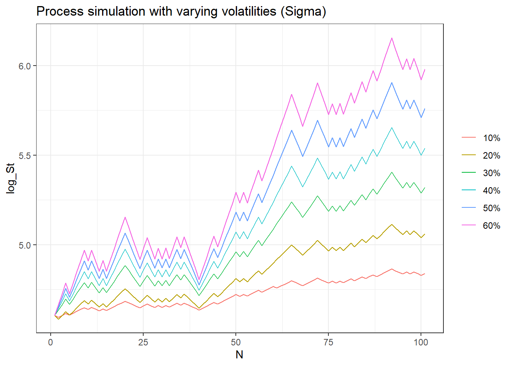
funsigma(.1,.6,.1,1000)## Warning in melt(dat, id.vars = "N"): The melt generic in data.table has been passed a data.frame and will attempt to redirect to the
## relevant reshape2 method; please note that reshape2 is deprecated, and this redirection is now deprecated as well. To continue using melt
## methods from reshape2 while both libraries are attached, e.g. melt.list, you can prepend the namespace like reshape2::melt(dat). In the
## next version, this warning will become an error.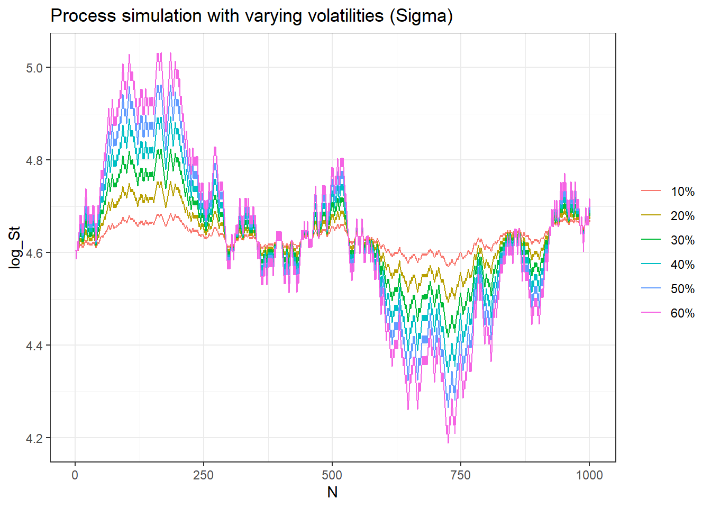
Changes in \(\sigma\) do exhibit changes in the limiting process and not only in the cases where N is small. The results are aligned with the intuition that higher values of sigma leads to a process which exhibits more volatility. The random shocks are amplified for higher \(\sigma\), that’s why the movements are bigger. Note that, in the extreme case where \(\sigma=0\) the whole process would be a straight line.
Now \(r\). We are taking a baseline setting in which \(\sigma=30\%\), \(t=1\) and \(\mu=5.5\%\) and varying through a sequence of \(r\) to simulate trajectories
funrf<-function(min,max,increment,n){
vec<-seq(min,max,increment)
m<-matrix(NA,nrow=(n+1),ncol=length(vec))
for (i in 1:length(vec)){
for (j in 1:(n+1)){
m[j,i]<-series(r=vec[i],mu=.055,t=1,n,v=.3)[j] #This is the relevant line for selecting the varying parameter (Sigma in this case)
}
dat<-cbind(N=c(0:n+1),as.data.frame(m))
names(dat)<-c("N",paste0(vec*100,"%"))
}
datmelt<-melt(dat,id.vars="N")
ggplot(datmelt, aes(x = N, y = value, color=variable))+theme_bw()+xlab("N")+ylab("log_St")+geom_line()+ theme(legend.title = element_blank())+ggtitle("Process simulation with varying risk-free rates (r)")
}
#Simulating for a set risk-free rates
funrf(.01,.15,.01,10)## Warning in melt(dat, id.vars = "N"): The melt generic in data.table has been passed a data.frame and will attempt to redirect to the
## relevant reshape2 method; please note that reshape2 is deprecated, and this redirection is now deprecated as well. To continue using melt
## methods from reshape2 while both libraries are attached, e.g. melt.list, you can prepend the namespace like reshape2::melt(dat). In the
## next version, this warning will become an error.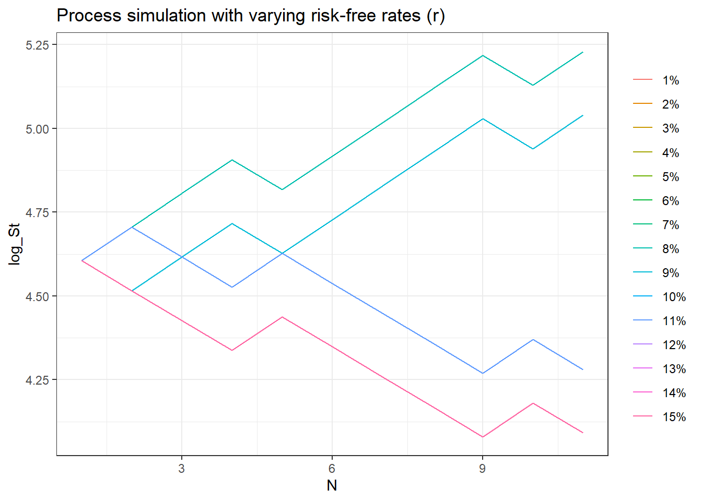
funrf(.01,.15,.01,100)## Warning in melt(dat, id.vars = "N"): The melt generic in data.table has been passed a data.frame and will attempt to redirect to the
## relevant reshape2 method; please note that reshape2 is deprecated, and this redirection is now deprecated as well. To continue using melt
## methods from reshape2 while both libraries are attached, e.g. melt.list, you can prepend the namespace like reshape2::melt(dat). In the
## next version, this warning will become an error.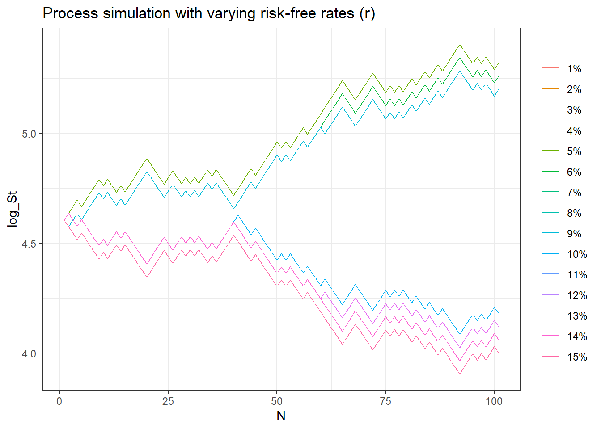
funrf(.01,.15,.01,1000)## Warning in melt(dat, id.vars = "N"): The melt generic in data.table has been passed a data.frame and will attempt to redirect to the
## relevant reshape2 method; please note that reshape2 is deprecated, and this redirection is now deprecated as well. To continue using melt
## methods from reshape2 while both libraries are attached, e.g. melt.list, you can prepend the namespace like reshape2::melt(dat). In the
## next version, this warning will become an error.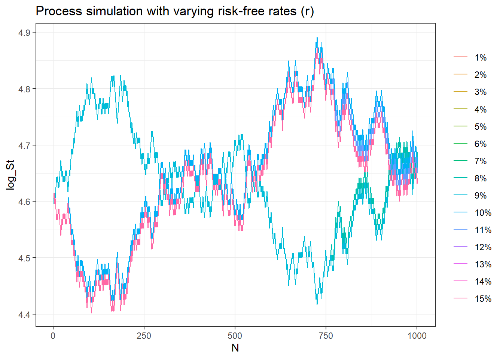
This case is comparable with the \(\mu\) case. It only exhibitis effects when N is small. The effect of varying \(r\) through positive values can be viewed as somewhat the opposite of \(mu\) as they have different signs in the process’ formula. This means that under a higher \(r\) while keeping all else constant, implying a lower market-price of risk, the process will tend to exhibit a flatter or even negative trend. As in the case of \(\mu\), in the limiting case this effect fades. That is because we have discounted prices using the risk neutral probability to be martingales p such that satisfies this to be a martingale process.
In what follows we detail our answers to Problem Set 2. Of note, the intuition to each question’s answer is presented at the end of the code that generated the intermedite results of the analysis.
1.1) We start by simulating an arbitrary (40) paths of the stock price and plotting them. These are generated under the set of baseline parameters given in the hw.
#Baseline parameters
s0<-100
r<-.05/2 #annualized short rate for 6 months
t<-1/2 #6 month period
n<-1000
vols<-c(.17,.15,.13,.12)
#This function generates paths for the stock price with
#time-dependent volatility (piecewise as specified in PS2)
stock_path<-function(t,n,r,vols,s0=100){
i<-(t/n)
path<-c(s0)
for (j in 1:n){
if(i<(1/6)*t)# vol of 17% for month <1
{path[j+1]<-path[j]*(1+r*(t/n)+vols[1]*rnorm(1,0,(sqrt(t/n))))
i<-i+(t/n)}
else if (i>=(1/6)*t&i<(3/6)*t)# vol of 15% for 1<=month<3
{path[j+1]<-path[j]*(1+r*(t/n)+vols[2]*rnorm(1,0,(sqrt(t/n))))
i<-i+(t/n)}
else if (i>=(3/6)*t&i<(5/6)*t)# vol of 13% for 3<=month<5
{path[j+1]<-path[j]*(1+r*(t/n)+vols[3]*rnorm(1,0,(sqrt(t/n))))
i<-i+(t/n)}# vol of 12% for month 6 (last month)
else (path[j+1]<-path[j]*(1+r*(t/n)+vols[4]*rnorm(1,0,(sqrt(t/n)))))
}
return(path)
}
#Now we want to simulate 'q' paths with the
#same parameters (several draws from Normal for vol term) and plot them
paths<-function(q,t,n,r,vols,s0=100){
m<-c()
for (i in 1:q){
set.seed(i*32)
m<-cbind(m,stock_path(t,n,r,vols))
dat<-cbind(id=c(0:n+1),as.data.frame(m))
}
datmelt<-melt(dat,id.vars="id")
ggplot(datmelt,
aes(x = id, y = value, color=variable))+theme_bw()+
xlab("N=1000")+ylab("St")+geom_line()+ theme(legend.position = "none")+
ggtitle(paste0(q," possible paths for the stock price"))
}
paths(40,t,n,r,vols)## Warning in melt(dat, id.vars = "id"): The melt generic in data.table has been passed a data.frame and will attempt to redirect to the
## relevant reshape2 method; please note that reshape2 is deprecated, and this redirection is now deprecated as well. To continue using melt
## methods from reshape2 while both libraries are attached, e.g. melt.list, you can prepend the namespace like reshape2::melt(dat). In the
## next version, this warning will become an error.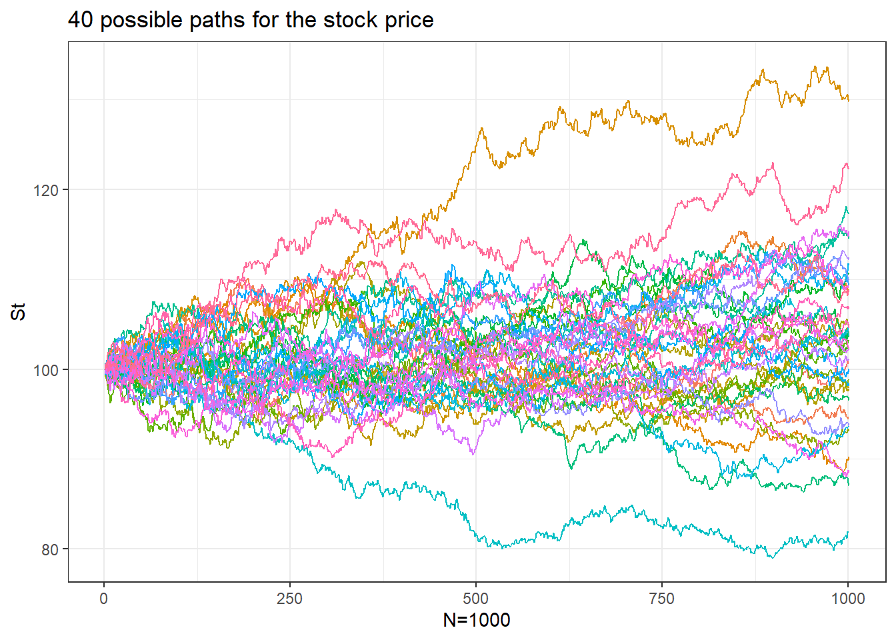
1.2) Next we plot the path of the stock for one of the potential realizations shown before.
#Now we recover only one path for the stock (first realization from 40 above)
paths_frame<-function(q,t,n,r,vols,s0=100){
m<-c()
for (i in 1:q){
set.seed(i*32)
m<-cbind(m,stock_path(t,n,r,vols))
dat<-cbind(id=c(0:n+1),as.data.frame(m))
}
datmelt<-melt(dat,id.vars="id")
return(datmelt)
}
a_path<-paths_frame(1,t,n,r,vols)## Warning in melt(dat, id.vars = "id"): The melt generic in data.table has been passed a data.frame and will attempt to redirect to the
## relevant reshape2 method; please note that reshape2 is deprecated, and this redirection is now deprecated as well. To continue using melt
## methods from reshape2 while both libraries are attached, e.g. melt.list, you can prepend the namespace like reshape2::melt(dat). In the
## next version, this warning will become an error.ggplot(a_path, aes(x = id, y = value, color=variable))+theme_bw()+
xlab("N=1000")+ylab("St")+geom_line()+theme(legend.position = "none")+
ggtitle(paste0("A given path for the stock price"))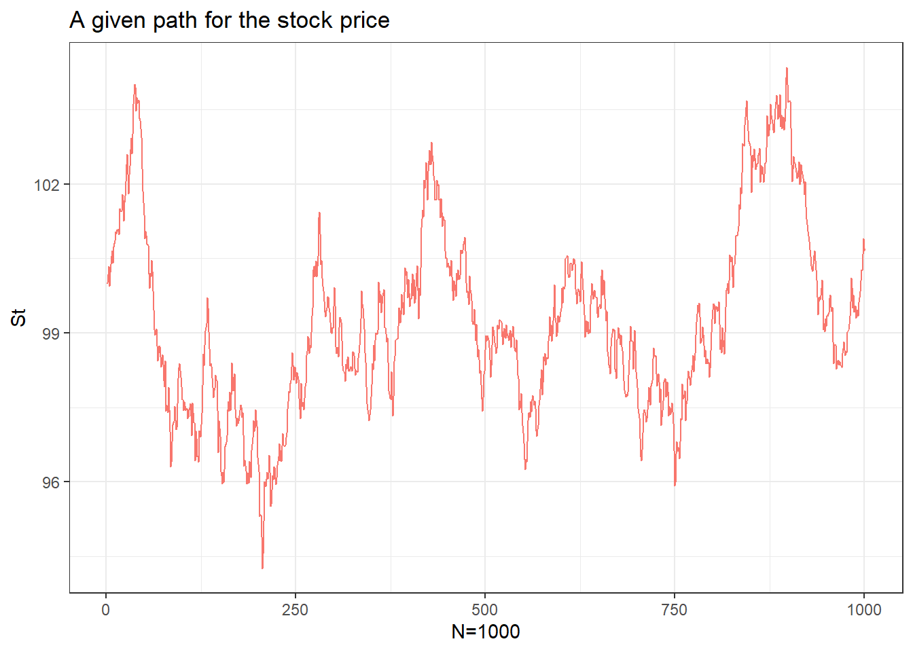
st<-a_path$value #Saving series into a vector1.3.a) A first step in simulating the path of the Call price is to compute implied volatility at each “infinitesimal” time step. We show our approach to this procedure in the following chunk of code. Note that we are using the step-wise decreasing volatility we originally interpreted from the problem set as an input for implied volatility computations.
#Building a vector that matches the size and frequency of the stock price
#at each time step with the corresponding squared volatility (piecewise)
vol_path<-function(t,n,r,vols,vol0=vols[1]^2){
i<-(t/n)
path<-c(vol0)
for (j in 1:n){
if(i<(1/6)*t){path[j+1]<-vols[1]^2# vol of 17% for month <1
i<-i+(t/n)}
else if (i>=(1/6)*t&i<(3/6)*t){path[j+1]<-vols[2]^2 # vol of 15% for 1<=month<3
i<-i+(t/n)}
else if (i>=(3/6)*t&i<(5/6)*t){path[j+1]<-vols[3]^2# vol of 13% for 3<=month<5
i<-i+(t/n)}
else (path[j+1]<-vols[4]^2)# vol beyond 5th month
}
return(path)
}
sqrvolpath<-vol_path(t,n,r,vols)
#Implied volatility path
implied_vol<-function(vpath,t,n){step<-(t/n)
path<-c()
for (j in 1:(n+1)){
path[j]<-sqrt(1/(length(vpath)-j*step))*sqrt(sum(vpath[j:length(vpath)]))
}
return(path)
}
#Storing series into a vector for further computations
impvolvec<-implied_vol(sqrvolpath,1/2,n)
impvolvec_df<-as.data.frame(cbind(id=seq(1,length(impvolvec),1),impvolvec*100))
#Plotting
ggplot(melt(impvolvec_df,id.vars="id"), aes(x = id, y = value, color=variable))+
theme_bw()+xlab("N=1000")+ylab("Sigma (%)")+geom_line()+
theme(legend.position = "none")+ggtitle(paste0("Implied volatility path"))## Warning in melt(impvolvec_df, id.vars = "id"): The melt generic in data.table has been passed a data.frame and will attempt to
## redirect to the relevant reshape2 method; please note that reshape2 is deprecated, and this redirection is now deprecated as well.
## To continue using melt methods from reshape2 while both libraries are attached, e.g. melt.list, you can prepend the namespace like
## reshape2::melt(impvolvec_df). In the next version, this warning will become an error.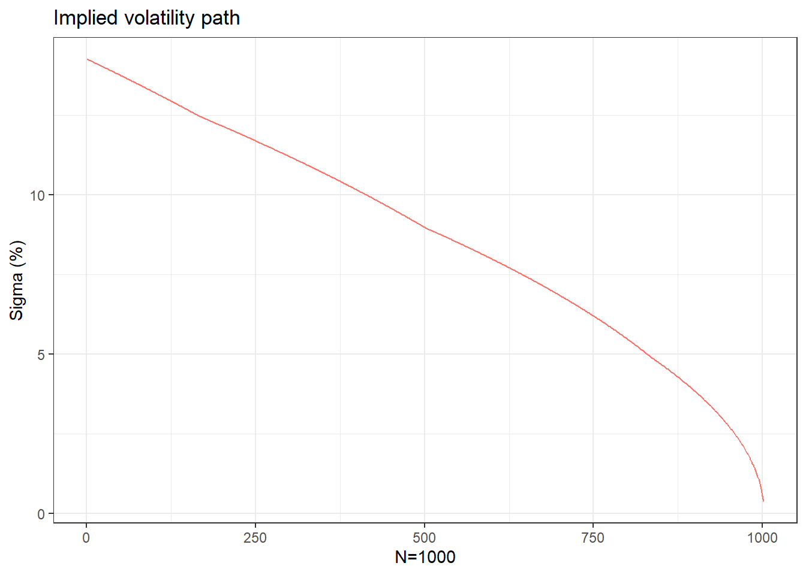 1.3.b) We now have all the necessary inputs to compute the value of the call at every small time step between 0 and month 6.
# A function for computing the B&S price path of a call over the time steps
call <- function(s, k, r, t, sigma) {call<-c()
for (i in 1:length(s)-1){t<-.5-(i/(n*2))
d1 <- (log(s[i]/k) + (r + sigma[i]^2/2)*t) / (sigma[i]*sqrt(t))
d2 <- d1 - sigma[i]*sqrt(t)
call[i]<-s[i]*pnorm(d1)-k*exp(-r*t)*pnorm(d2)
}
return(call)
}
call_price<-call(st,100,r,t,impvolvec)
#Now plotting
ggplot(melt(as.data.frame(cbind(id=seq(1,length(call_price),1),call_price)),
id.vars="id"),aes(x = id, y = value, color=variable))+theme_bw()+
xlab("N=1000")+ylab("$")+geom_line()+ theme(legend.position = "none")+
ggtitle(paste0("Call price path"))## Warning in melt(as.data.frame(cbind(id = seq(1, length(call_price), 1), : The melt generic in data.table has been passed a data.frame and
## will attempt to redirect to the relevant reshape2 method; please note that reshape2 is deprecated, and this redirection is now deprecated
## as well. To continue using melt methods from reshape2 while both libraries are attached, e.g. melt.list, you can prepend the namespace
## like reshape2::melt(as.data.frame(cbind(id = seq(1, length(call_price), 1), call_price))). In the next version, this warning will become an
## error.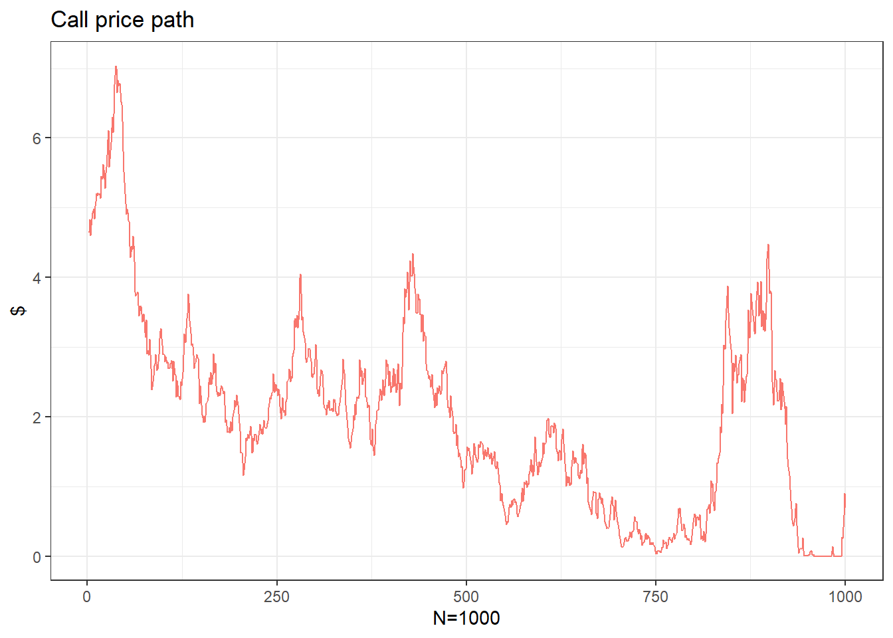 1.3. c) A number of functions for calculating daily delta, and the daily hedging error are defined in this chunk.
#Next step is simulating the hedging portfolio assuming daily rebalancing
#First we need the indices of 180 (i.e. .5*1/360) steps of the stock price
indices<-round(seq(1,1001,1*(1000/180)))
indices[length(indices)]<-1000
st_daily<-st[indices]
call_daily<-call_price[indices]
r1<-r*(1/180) #Short rate for daily rebalancing
#Now we compute daily delta
a<-c()
b<-c()
for(i in 1:length(st_daily)){
a[i]<-(call_daily[i+1]-call_daily[i]*exp(r1))
}
for(i in 1:length(st_daily)){
b[i]<-(st_daily[i+1]-st_daily[i]*exp(r1))
}
delta<-a/b
delta<-delta[-length(delta)]
delta[which.min(delta)]<-mean(delta[which.min(delta)-1],
delta[which.min(delta)+1])
ggplot(melt(as.data.frame(cbind(id=seq(1,length(delta),1),delta)),
id.vars="id"),aes(x = id, y = value, color=variable))+theme_bw()+
xlab("N=180")+ylab("")+geom_line()+ theme(legend.position = "none")+
ggtitle(paste0("Daily rebalanced delta of the hedging portfolio")) #plot## Warning in melt(as.data.frame(cbind(id = seq(1, length(delta), 1), delta)), : The melt generic in data.table has been passed a data.frame
## and will attempt to redirect to the relevant reshape2 method; please note that reshape2 is deprecated, and this redirection is now
## deprecated as well. To continue using melt methods from reshape2 while both libraries are attached, e.g. melt.list, you can prepend the
## namespace like reshape2::melt(as.data.frame(cbind(id = seq(1, length(delta), 1), delta))). In the next version, this warning will become an
## error.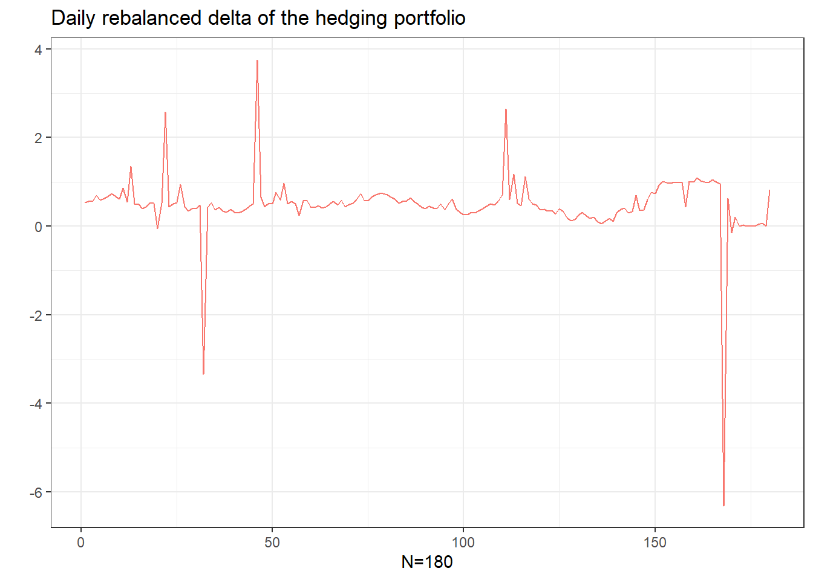
#Now we define a function to compute the hedging portfolio recursively
hedg_port_daily<-c(call_daily[1])
for(i in 2:180){
hedg_port_daily[i]<-(hedg_port_daily[i-1]*exp(-r1))+
delta[i-1]*(st_daily[i]-st_daily[i-1])
}
#Plot of the call value (continous) v hedging portfolio value
ggplot(melt(as.data.frame(cbind(id=seq(1,length(hedg_port_daily),1),
"Hedging portfolio"=hedg_port_daily,"Call"=call_daily[-length(call_daily)])),
id.vars="id"),aes(x = id, y = value, color=variable))+theme_bw()+
xlab("N=180")+ylab("$")+geom_line()+
theme(legend.title = element_blank())+
ggtitle(paste0("Daily call price v hedging portfolio value")) ## Warning in melt(as.data.frame(cbind(id = seq(1, length(hedg_port_daily), : The melt generic in data.table has been passed a data.frame and
## will attempt to redirect to the relevant reshape2 method; please note that reshape2 is deprecated, and this redirection is now deprecated
## as well. To continue using melt methods from reshape2 while both libraries are attached, e.g. melt.list, you can prepend the namespace
## like reshape2::melt(as.data.frame(cbind(id = seq(1, length(hedg_port_daily), 1), `Hedging portfolio` = hedg_port_daily, Call = call_daily[-
## length(call_daily)]))). In the next version, this warning will become an error.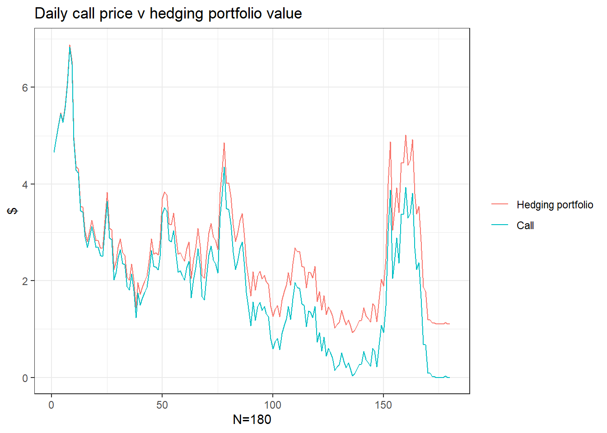
#Now we want to plot the hedging error itself
hedge_error<-hedg_port_daily-call_daily[-length(call_daily)]
#plot(hedge_error,type='l')
ggplot(melt(as.data.frame(cbind(id=seq(1,length(hedge_error),1),
hedge_error)),id.vars="id"),aes(x = id, y = value, color=variable))+
theme_bw()+xlab("N=180")+ylab("")+geom_line()+ theme(legend.position = "none")+
ggtitle(paste0("Daily hedging error")) #plot of delta## Warning in melt(as.data.frame(cbind(id = seq(1, length(hedge_error), 1), : The melt generic in data.table has been passed a data.frame and
## will attempt to redirect to the relevant reshape2 method; please note that reshape2 is deprecated, and this redirection is now deprecated
## as well. To continue using melt methods from reshape2 while both libraries are attached, e.g. melt.list, you can prepend the namespace like
## reshape2::melt(as.data.frame(cbind(id = seq(1, length(hedge_error), 1), hedge_error))). In the next version, this warning will become an
## error.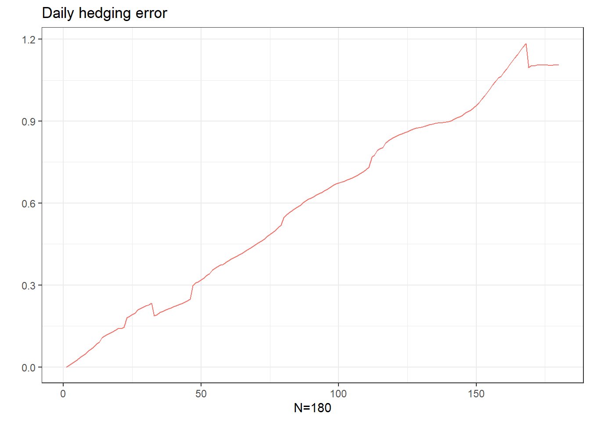
For this question we have simulated 40 paths of a stock price over a period of six months specifying that the stock follows a path in accordance with geometric Brownian motion as hypothesized in the Black-Scholes model. For the parameters of the for the stock price assuming the initial stock price of 100, interest rate r=5%, and a realized volatility path that is a step function where volatility of the stock begins at 17% in the first month, then steps down to 15% for the next two months, steps down again to 13% for two months, and finally steps down to 12% for the final month.
We then choose one path of the stock over the period of 6 months and use this path to evaluate the value of a call option struck at 100 over the course of the 6 months. As can be seen in the graph, the path we have chosen is one where the stock price oscillates between ~94 and ~104 and finishes with a terminal value of 100.69. This means that the maximum intrinsic value of the option over its life is approximately $4 and its terminal value should be $0.69.
As can be seen in the chart, the call price initially rallies up to roughly $7 as the stock rallies up to $103.65 at n=42. Since the option still has a long time to maturity and also is at the point where volatility is highest, the option has significant value in excess of its intrinsic value (roughly $3 of time value when measured at the peak stock price). However, the stock quickly reverses to trade below 100 and remains rangebound between 96 and 102 until n=750. During this time the call price generally grinds lower due to the combined effect of decreasing time to maturity as well as the decrease in the implied vol as the option ages. Around n=750, the stock then experiences a sharp rally back to ~104 and the option also jumps sharply as the stock rallies. Note however that the value of the option peaks at a lower level than it did at n=42 even though the stock price is actually slightly higher. This is because of the decreased time to maturity and lower implied volatility used to price the option, which means that at this stage in the option’s life intrinsic value is a much higher percentage of the total option value. The stock thens off after n~900 and drops below the strike price as it approaches maturity. The option suffers a very sharp loss during this period as its value drops from $4.50 down to very close to zero as it loses all of its intrinsic value. Finally, in the last 5 days of prior to maturity the stock rallies above the strike price, and the option reacts very quickly as the delta of the option quickly approaches 1 once the stock passes the strike price with such a short time to maturity.
We also plot the value of the hedging error over the life of the trade. The hedging error stems from the fact that while the option delta changes continuously as the stock price moves, we are only choosing to rehedge the delta daily. Therefore, there will be intraday differences between the delta of our hedge portfolio and the delta of the option that result in small profits/losses that depend on the fluctuation in the stock. Since we are long a call option, large movements in the stock price intraday are generally positive for our net PnL. As the stock rises the delta of our call option rises intraday while the hedge portfolio delta remains constant, resulting in a small gain. Similarly, when the stock falls intraday, the our call delta shrinks while the hedge portfolio delta remains the same, resulting in small gains from the short delta of the hedge portfolio. Since we model the realized volatility as being identical to the implied volatility, this means that over time we accumulate net gains in the portfolio as we capture some of the gamma benefit of being long the option (this is a manifestation of the parabolic PnL graph of being long the option in the notes). However, in the real world we would expect that options would generally be priced with some risk premium such that implied volatility is frequently higher than realized, such that the option seller gets compensated for assuming the risk of selling the option.
To compute the implied volatility we iterate this procedure \[ \sigma_1 = \sigma_0 - \frac{f(\sigma_0)}{f'(\sigma_0)}\]
implied.vol <- function(S, K, r, Tminust, C){
f <- function(sigma, S, K, r, Tminust, C) {#defining f(sigma)
d1 <- (log(S/K) + ( (r + sigma^2/2)*(Tminust)))/(sigma*sqrt(Tminust));
d2 <- (log(S/K) + ( (r - sigma^2/2)*(Tminust)))/(sigma*sqrt(Tminust));
part1 <- pnorm(d1) * S;
part2 <- K*exp(-r*(Tminust)) * pnorm(d2);
VC <- part1 - part2;
f <- VC - C;
f
}
fprime <- function(sigma, S, K, r, Tminust, C) {#defining f'(sigma)
d1 <- (log(S/K) + ( (r + sigma^2/2)*(Tminust)))/(sigma*sqrt(Tminust));
fprime <- S*sqrt(Tminust)*dnorm(d1)*exp(-r*Tminust);
fprime
}
epsilon <- 10^(-5)
sigmaNew <- sqrt((2*abs(log(S/(K*exp(-r*Tminust)))))/(Tminust))
#repeat the iteration until the computed sigma minus the previous is less than our epsilon
repeat {
sigmaOld <- sigmaNew
sigmaNew <- sigmaOld - f(sigmaOld, S, K, r, Tminust, C)/fprime(sigmaOld, S, K,
r, Tminust)
if (abs(sigmaNew - sigmaOld) < epsilon) {
break
}
}
return(sigmaNew)
}#Duke Energy Data
S <- 42.27
K <- c(40,42.5,45)
Time<-c(25,60,151)
Tminust<-round((Time/360),4)
r<-c(0.0492,0.0485,0.0491)
C<-data.frame("40"=c(3.9,4.3,5.3),
"42.5"=c(2.7,3.9,4.8),
"45"=c(1.25,2.4,3.3))
rownames(C)=Tminustimpl.vol.mat <- matrix(nrow=length(Tminust),ncol=length(K), dimnames = list(Tminust,K))
#Creating Duke's matrix of implied volatilities for the different K and Maturity
for (k in 1:length(K)){
for(t in 1:length(Tminust)){
impl.vol.mat[t,k] = implied.vol(S=S,K=K[k],r=r[t],Tminust = Tminust[t],C=C[t,k])
}
}library(plot3D)
par(cex=1, mai=c(1,1,1,1))
persp3D(z = impl.vol.mat, theta = 45, expand = 0.8,border = "white",
main="Implied volatility for Duke Energy",xlab="Time to maturity"
,ylab="Strike Price",zlab="Implied volatility")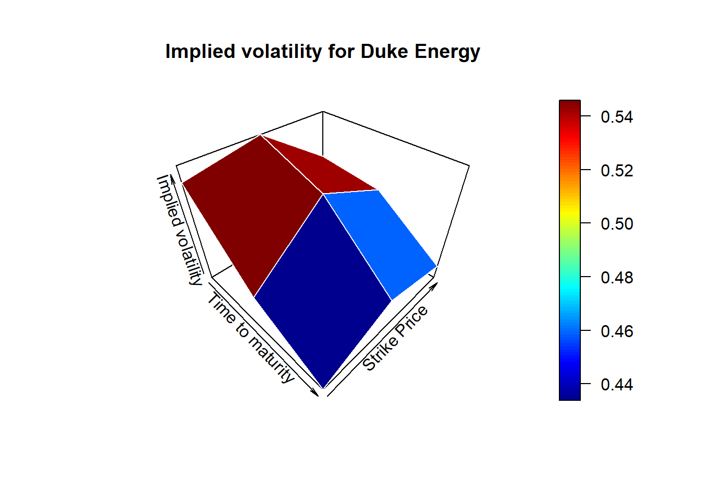
#IBM Data
S <- 108.90
K <- c(100,110,120)
Time<-c(25,60,151)
Tminust<-round((Time/360),4)
r<-c(0.0492,0.0485,0.0491)
C<-data.frame("100"=c(12,14.1,18.7),
"110"=c(4.4,8.1,11.4),
"120"=c(1.1,3.6,7.5))
rownames(C)=Tminustimpl.vol.mat <- matrix(nrow=length(Tminust),ncol=length(K), dimnames = list(Tminust,K))
#Creating IBM's matrix of implied volatilities for the different K and Maturity
for (k in 1:length(K)){
for(t in 1:length(Tminust)){
impl.vol.mat[t,k] = implied.vol(S=S,K=K[k],r=r[t],Tminust = Tminust[t],C=C[t,k])
}
}library(plot3D)
par(cex=1, mai=c(1,1,1,1))
persp3D(z = impl.vol.mat, theta = 45, expand = 0.8,border = "white",
main="Implied volatility for IBM",xlab="Time to maturity",
ylab="Strike Price",zlab="Implied volatility")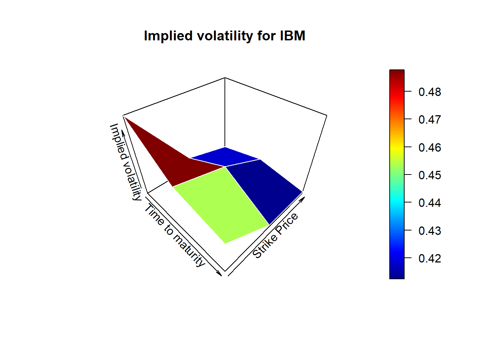
#MICROSOFT Data
S <- 55.19
K <- c(50,55,60)
Time<-c(25,60,151)
Tminust<-round((Time/360),4)
r<-c(0.0492,0.0485,0.0491)
C<-data.frame("50"=c(6.5,8.13,10),
"55"=c(3,4.5,6.88),
"60"=c(0.94,2.38,4.5))
rownames(C)=Tminustimpl.vol.mat <- matrix(nrow=length(Tminust),ncol=length(K), dimnames = list(Tminust,K))
#Creating IBM's matrix of implied volatilities for the different K and Maturity
for (k in 1:length(K)){
for(t in 1:length(Tminust)){
impl.vol.mat[t,k] = implied.vol(S=S,K=K[k],r=r[t],Tminust = Tminust[t],C=C[t,k])
}
}library(plot3D)
par(cex=1, mai=c(1,1,1,1))
persp3D(z = impl.vol.mat, theta = 45, expand = 0.8,border = "white",
main="Implied volatility for MICROSOFT",xlab="Time to maturity",
ylab="Strike Price",zlab="Implied volatility")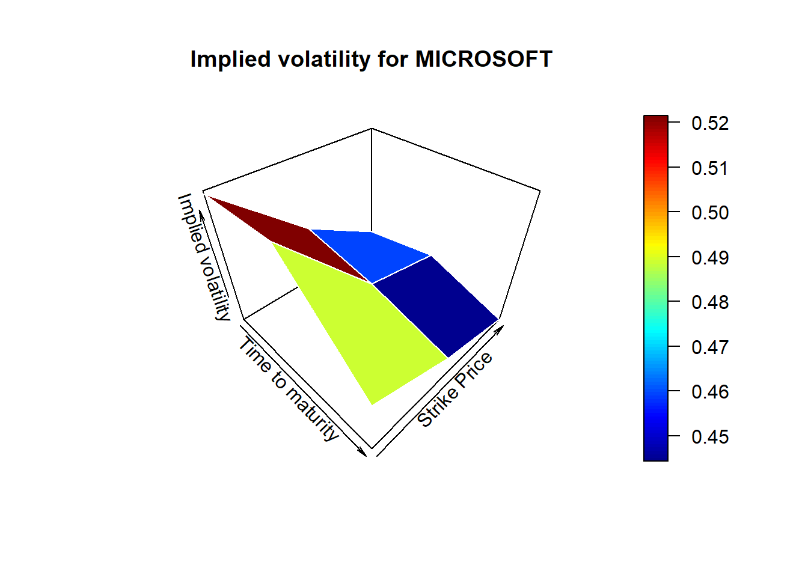
In the second exercise we use the option prices given in case 1 to plot the volatility surface for 3 stocks: Duke Energy, IBM, and Microsoft. For each stock we are given option prices for 3 different strike prices across 3 different maturities: March, April, and June. Using this data we compute the implied volatilities for the 3 different strikes for each different month of expiry and come up with a volatility surface consisting of 9 points. While these volatility surfaces are quite limited in terms of their dimensionality, some general takeaways can be seen. First, it should be noted that Duke Energy has quite a unique volatility surface that does not resemble the other two stocks. In particular, Duke Energy’s volatility surface does not display any smile or skew, as the ATM options have the highest volatility. We cannot really say with confidence what is driving the odd shape of Duke Energy’s volatility surface. For the other two stocks, the most notable feature of the volatility surface is the pronounced skew that we see especially among the shortest maturity options. Both MSFT and IBM show substantially higher implied volatility for options with lower strike prices. This is a fairly common trait for equity options as the returns of large cap stocks tend to show fatter left tails than right tails, thereby leading the market to price higher implied volatility for options with lower strike prices. In addition, we also note that the term structure of volatility for all of the stocks is flat to slightly inverted (ie, near term maturities trading with higher implied volatilities). While we don’t know for sure the cause of this, we do note that 2000-2001 was a time of relatively high realized volatility for equity markets, so we suspect that since volatility tends to cluster in the short term and mean revert in the longer term, the volatility surface is pricing the shorter dated options close to the levels of recent realized volatility whereas the longer dated options are priced for a small amount of mean reversion.
library(data.table)In what follows we detail our answers to Problem Set 3. Of note, the intuition to each question’s answer is presented at the end of the code that generated the intermedite results of the analysis.
We start by simulating an arbitrary number (4) paths for the stock price and plotting them. These are generated under the set of baseline parameters given in HW3 and assuming the stock price follows a Geometric Brownian Motion process.
#Baseline parameters
s0<-100
r<-0.1 #annualized short rate for 1 year
t<-1 #1 year period
n<-1000 #of small timesteps
sigma<-0.2 #constant volatility of 20% assumed
H<-90 #down/out barrier at $90
k<-103
#This function generates paths for the stock price
stock_path<-function(t,n,r,sigma,s0=100){
path<-c(s0)
for (j in 1:n){
(path[j+1]<-path[j]*(1+r*(t/n)+sigma*rnorm(1,0,(sqrt(t/n)))))
}
return(path)
}
#Now we want to simulate 'q' paths with the
paths<-function(q,t,n,r,vols,s0=100){
m<-c()
for (i in 1:q){
set.seed(i*1521)
m<-cbind(m,stock_path(t,n,r,vols))
dat<-cbind(id=c(0:n+1),as.data.frame(m))
}
datmelt<-melt(dat,id.vars="id")
ggplot(datmelt,
aes(x = id, y = value, color=variable))+theme_bw()+
xlab("N=1000")+ylab("St, down/out Barrier")+geom_line()+ theme(legend.position = "none")+
ggtitle(paste0(q," possible paths for the stock price"))+geom_hline(yintercept=90, linetype=6, size=0.2)+
annotate(geom="text",x=-1,y=88, label="H=90",color="black")
}
#paths(4,t,n,r,sigma,s0)
#Now we recover each path of the stock individually
paths_frame<-function(q,t,n,r,sigma,s0=100){
m<-c()
for (i in 1:q){
set.seed(i*12)
m<-cbind(m,stock_path(t,n,r,sigma))
dat<-cbind(id=c(0:n+1),as.data.frame(m))
}
datmelt<-melt(dat,id.vars="id")
return(datmelt)
}
a_path<-data.table(paths_frame(4,t,n,r,sigma))## Warning in melt(dat, id.vars = "id"): The melt generic in data.table has been passed a data.frame and will attempt to redirect to the
## relevant reshape2 method; please note that reshape2 is deprecated, and this redirection is now deprecated as well. To continue using melt
## methods from reshape2 while both libraries are attached, e.g. melt.list, you can prepend the namespace like reshape2::melt(dat). In the
## next version, this warning will become an error.a_path[variable=="V1",path:="S1"]
a_path[variable=="V2",path:="S2"]
a_path[variable=="V3",path:="S3"]
a_path[variable=="V4",path:="S4"]
a_path<-a_path[][,-2]
ggplot(a_path, aes(x = id, y = value, color=path))+theme_bw()+
xlab("N=1000")+ylab("St, H")+geom_line()+
ggtitle(paste0("4 given paths for the stock price"))+geom_hline(yintercept=90, linetype=6, size=0.2)+annotate(geom="text",x=-1,y=88, label="H=90",color="black")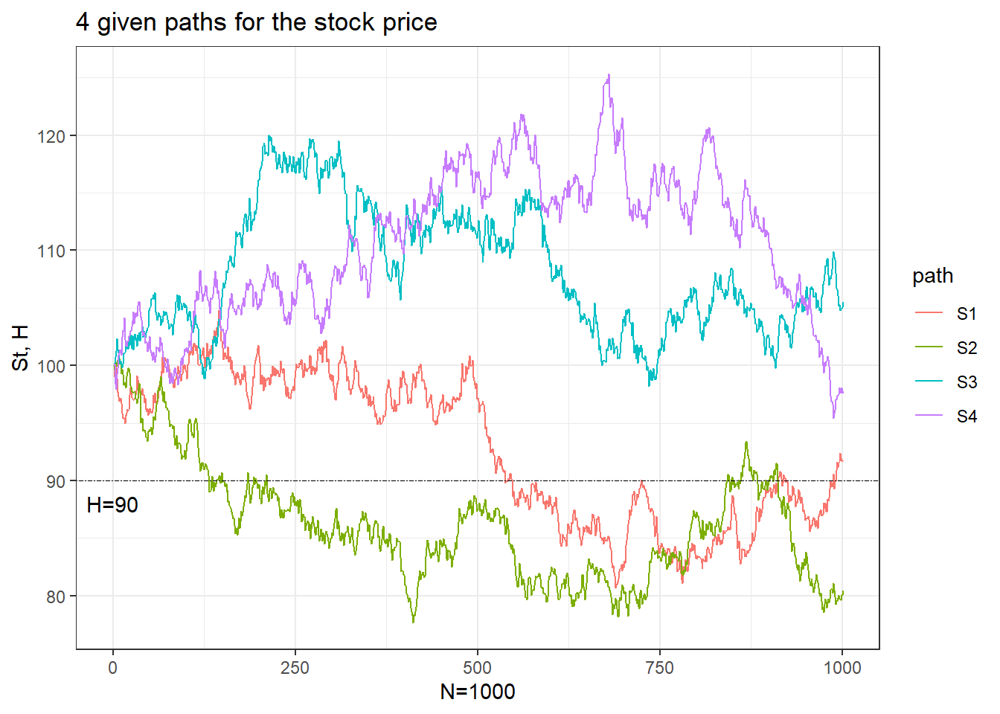
#plot(a_path[variable=="V1"]$value)
#1red,2green,3blue,4purpleNow we want to price vanilla and d/o barrier calls for each of these possible stock price paths
#Since price setting for the barrier is done daily, we need to extract daily prices
# from the simulated "continous" price of the stock to make price series comparable
daily_indices<-ceiling(seq(1,1000,(1000/365)))
#stock path 1
S1<-a_path[path=="S1"&id%in%daily_indices]$value
#stock path 2
S2<-a_path[path=="S2"&id%in%daily_indices]$value
#stock path 3
S3<-a_path[path=="S3"&id%in%daily_indices]$value
#stock path 4
S4<-a_path[path=="S4"&id%in%daily_indices]$value
#Now we compute the vanilla call price paths for each of the stock price paths with K=103
#Pricing function for vanilla call
vanilla_call<- function(s, k, r, sigma) {call<-c()
for (i in 1:length(s)){t<-1-(i/(365))
d1 <- (log(s[i]/k) + (r + sigma^2/2)*t) / (sigma*sqrt(t))
d2 <- d1 - sigma*sqrt(t)
call[i]<-s[i]*pnorm(d1)-k*exp(-r*t)*pnorm(d2)
}
return(call)
}
#vanilla call path 1
vcall_1<-vanilla_call(S1,k,r,sigma)
#vanilla call path 2
vcall_2<-vanilla_call(S2,k,r,sigma)
#vanilla call path 3
vcall_3<-vanilla_call(S3,k,r,sigma)
#vanilla call path 4
vcall_4<-vanilla_call(S4,k,r,sigma)
#Pricing function for down,out call
#Note value goes to zero if barrier broken
down_out_call<-function(s,k,r,sigma,H){call<-c()
for (i in 1:length(s)){t<-1-(i/(365))
if(H<=s[i]){
d1 <- (log(s[i]/k) + (r + sigma^2/2)*t) / (sigma*sqrt(t))
d2 <- d1 - sigma*sqrt(t)
h1 <- (log((H^2/(s[i]*k))) + (r + sigma^2/2)*t)/(sigma*sqrt(t))
h2 <- (log((H^2/(s[i]*k))) + (r - sigma^2/2)*t)/(sigma*sqrt(t))
call[i]<-s[i]*pnorm(d1)-k*exp(-r*t)*pnorm(d2)-((H/s[i])^(1+2*r*(sigma)^(-2)))*s[i]*pnorm(h1)+k*exp(-r*t)*((H/s[i])^(1+2*r*(sigma)^(-2)))*pnorm(h2)
}
else{(call[i:length(s)]=0)
break}#Breaks loop if stock price crosses barrier
}
return(call)
}
#barrier call path 1
do_call_1<-down_out_call(S1,k,r,sigma,H)
day_cross_S1<-min(which(S1<H))#Barrier crossed at day 197
#barrier call path 2
do_call_2<-down_out_call(S2,k,r,sigma,H)
day_cross_S2<-min(which(S2<H))#Barrier crossed at day 49
#barrier call path 3
do_call_3<-down_out_call(S3,k,r,sigma,H)#Barrier not crossed
#barrier call path 4
do_call_4<-down_out_call(S4,k,r,sigma,H)#Barrier not crossed
#Now we want to plot the price paths for each of the vanilla and barrier call options pairs
dt_price_paths<-as.data.table(cbind(id=seq(1,365,1),vcall_1,do_call_1,vcall_2,do_call_2,vcall_3,do_call_3,vcall_4,do_call_4))
#Note none of the options finishes in the money, so value at t=365 is 0 in ALL cases
#Price differences from vanilla v barrier (non-negative) are plotted separately for each case, to aid in visual inspection
#path 1 plots
preplot_s1<-data.table(melt(dt_price_paths[,.(id,vcall_1,do_call_1)],id.vars="id"))
preplot_s1[variable=="vcall_1",Type:="Vanilla"]
preplot_s1[variable=="do_call_1",Type:="Barrier d/o"]
ggplot(preplot_s1,aes(x=id,y=value,color=Type))+geom_line()+theme_bw()+xlab("day (N=365)")+ylab("$")+ggtitle("Call prices for stock price path S1")+
geom_vline(xintercept=day_cross_S1, linetype=3, size=0.2)+annotate(geom="text",x=day_cross_S1-27,y=2, label="Barrier crossed",color="black",size=2.6)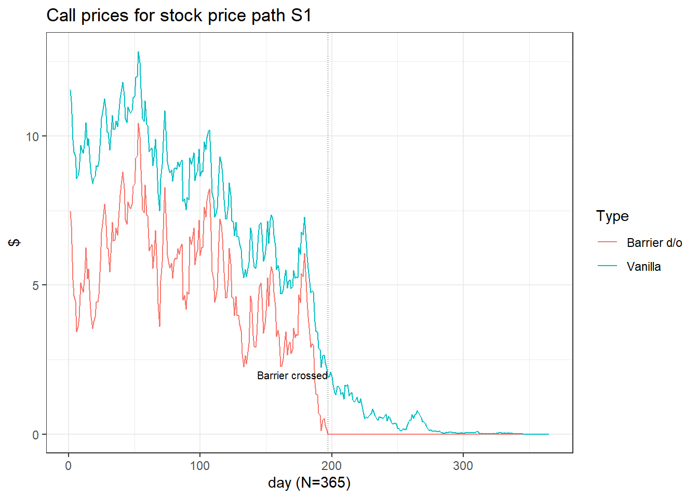
#plot price dif1
preplot_dif1<-as.data.table(cbind(id=seq(1,365,1),value=preplot_s1[Type=="Vanilla"]$value-preplot_s1[Type=="Barrier d/o"]$value))
#ggplot(preplot_dif1,aes(x=id,y=value))+geom_line(color="blue3")+theme_bw()+xlab("day (N=365)")+ylab("$")+ggtitle("Vanilla v Barrier d/o price difference for S1 path")+
#geom_vline(xintercept=day_cross_S1, linetype=3, size=0.2)+annotate(geom="text",x=day_cross_S1-27,y=0.75, label="Barrier crossed",color="black",size=2.6)
#path 2 plots
preplot_s2<-data.table(melt(dt_price_paths[,.(id,vcall_2,do_call_2)],id.vars="id"))
preplot_s2[variable=="vcall_2",Type:="Vanilla"]
preplot_s2[variable=="do_call_2",Type:="Barrier d/o"]
ggplot(preplot_s2,aes(x=id,y=value,color=Type))+geom_line()+theme_bw()+xlab("day (N=365)")+ylab("$")+ggtitle("Call prices for stock price path S2")+
geom_vline(xintercept=day_cross_S2, linetype=3, size=0.2)+annotate(geom="text",x=day_cross_S2+27,y=2, label="Barrier crossed",color="black",size=2.6)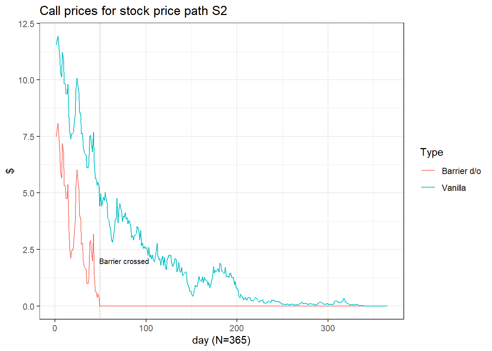
#plot price dif2
#preplot_dif2<-as.data.table(cbind(id=seq(1,365,1),value=preplot_s2[Type=="Vanilla"]$value-preplot_s2[Type=="Barrier d/o"]$value))
#ggplot(preplot_dif2,aes(x=id,y=value))+geom_line(color="blue3")+theme_bw()+xlab("day (N=365)")+ylab("$")+ggtitle("Vanilla v Barrier d/o price difference for S2 path")+
#geom_vline(xintercept=day_cross_S2, linetype=3, size=0.2)+annotate(geom="text",x=day_cross_S2+27,y=0.75, label="Barrier crossed",color="black",size=2.6)
#path 3 plots
preplot_s3<-data.table(melt(dt_price_paths[,.(id,vcall_3,do_call_3)],id.vars="id"))
preplot_s3[variable=="vcall_3",Type:="Vanilla"]
preplot_s3[variable=="do_call_3",Type:="Barrier d/o"]
ggplot(preplot_s3,aes(x=id,y=value,color=Type))+geom_line()+theme_bw()+xlab("day (N=365)")+ylab("$")+ggtitle("Call prices for stock price path S3")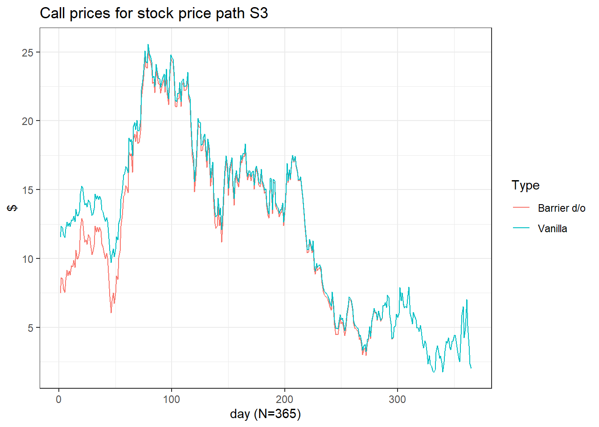
#plot price dif3
#preplot_dif3<-as.data.table(cbind(id=seq(1,365,1),value=preplot_s3[Type=="Vanilla"]$value-preplot_s3[Type=="Barrier d/o"]$value))
#ggplot(preplot_dif3,aes(x=id,y=value))+geom_line(color="blue3")+theme_bw()+xlab("day (N=365)")+ylab("$")+ggtitle("Vanilla v Barrier d/o price difference for S3 path")
#path 4 plots
preplot_s4<-data.table(melt(dt_price_paths[,.(id,vcall_4,do_call_4)],id.vars="id"))
preplot_s4[variable=="vcall_4",Type:="Vanilla"]
preplot_s4[variable=="do_call_4",Type:="Barrier d/o"]
ggplot(preplot_s4,aes(x=id,y=value,color=Type))+geom_line()+theme_bw()+xlab("day (N=365)")+ylab("$")+ggtitle("Call prices for stock price path S4")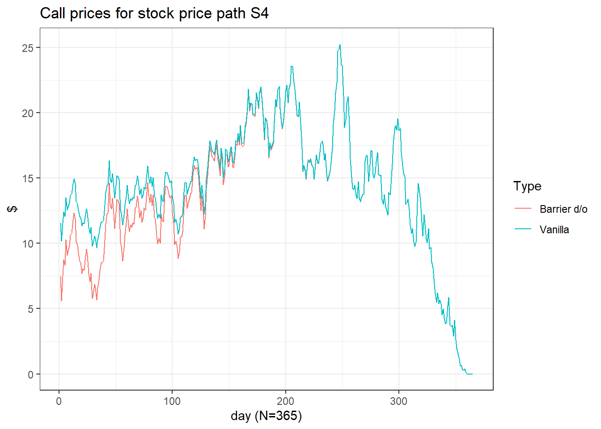
#plot price dif4
#preplot_dif4<-as.data.table(cbind(id=seq(1,365,1),value=preplot_s4[Type=="Vanilla"]$value-preplot_s4[Type=="Barrier d/o"]$value))
#ggplot(preplot_dif4,aes(x=id,y=value))+geom_line(color="blue3")+theme_bw()+xlab("day (N=365)")+ylab("$")+ggtitle("Vanilla v Barrier d/o price difference for S4 path")Intepretation of results for Q1
For this problem we first simulated four paths of a a stock price using the discrete approximation to the GBM process with an initial price of 100, a volatility of 20%, and a risk free rate (aka risk neutral drift) of 10%. We simulate each path over a period of 1 year with 1000 increments. These are the four simulations that will subsequently be used to price a down and out call option with a strike of 103 and a barrier of 90. As can be seen from the first graph, simulations S1 and S2 remain below the initial price for virtually the entire simulation, whereas simulation S3 is choppy around the initial price but settles above 105 at maturity, and path S4 initially rises strongly but subsequently drops to below the initial price. Also of note in the first graph is that both S1 and S2 cross the $90 level that is associated with the barrier level of our option. In the next series of graphs of color teal and orange, we plot the prices of a vanilla call option with a strike of 103 vs a down and out call with a strike of 103 and a barrier of 90. As can be seen from the initial values, the down and out call is always less expensive at inception than the vanilla call, which makes sense because the down and out call must be discounted due to the fact that there is some probability the option will hit the barrier prior to maturity and therefore be rendered worthless regardless of the price of the stock at the maturity of the option (time T). Of note, the underlying stock does hit the barrier in simulations S1 and S2, and we can see a rapid drop in price toward zero in the down and out call as the price approaches the barrier, whereas the vanilla option still retains its time value until maturity. In simulation 3, the stock remains above above the barrier during the entire simulation and finishes just above 105, so both the vanilla option and the down and out call converge to the intrinsic value of the option at maturity. However, it is worth noting that in spite of the fact that the stock finished above the strike price, both the vanilla and the down and out call posted negative returns, as the intrinsic value at time T was less then the price paid for either option. Because the down and out call was cheaper at inception, it had a less negative rate of return. Finally, in path S4, the underlying stock never hits the barrier; however, as the stock finishes below the 103 strike price, the value of both the down and out call and the vanilla option converge to zero at maturity.
Consider a one-year Asian call option struck at 103 with \(S_0\) = 100, \(\sigma\) = 0.2 and r = 0.1 with daily setting dates. Plot a realization of the stock price together with the arithmetic average. Using Monte Carlo plot the value of the call as a function of time using arithmetic average together with the corresponding vanilla call.
set.seed(9)
s0<-100
r<-.1
t<-1
n<-3650
k<-103
sigma<-.2
path<-c(s0)
average=100
for (j in 1:n){
path[j+1]<-path[j]*exp(sigma*sqrt(t/n)*rnorm(1)+(r-(sigma^2)/2)*(t/n))
average[j+1]=mean(path)
}
ggplot(,aes(1:(n+1), path,colour="Stock"))+
geom_line()+
geom_line(aes(1:(n+1),average, colour="Average at time t"))+
geom_line(aes(1:(n+1),average[length(average)], colour="Average at time T"))+
labs(x="Days", y="Price", title = "Stock path and arithmetic average")+
geom_hline(yintercept=103, alpha=0.4)+
annotate(geom="text",x=-1,y=104, label="K=103",color="black")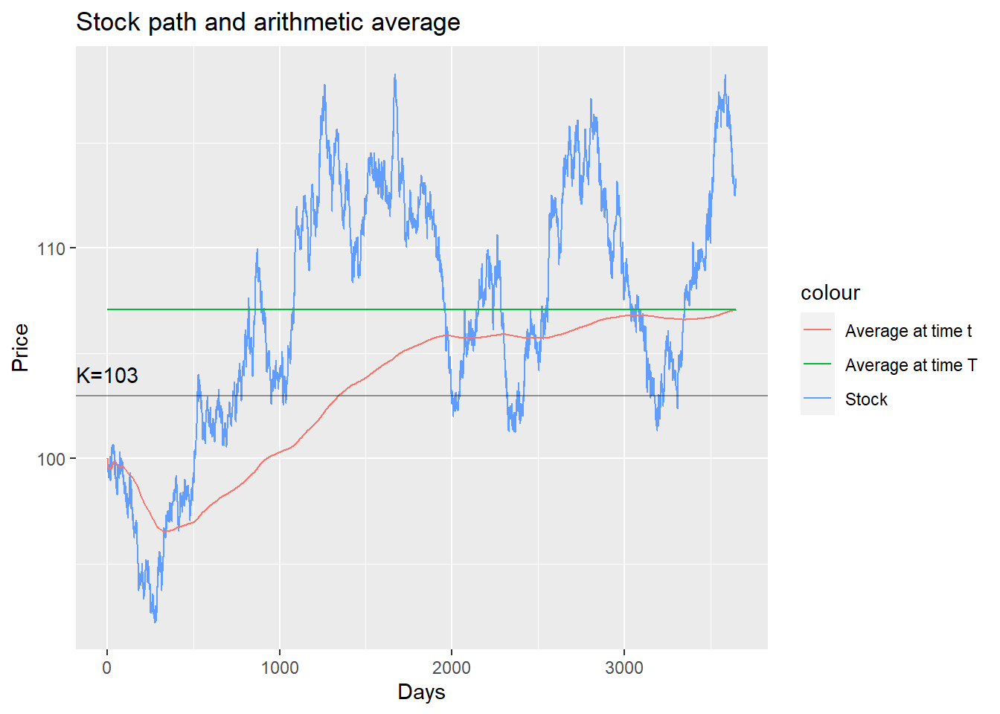
Create n*M paths matrix
data<-matrix(nrow=3650,ncol=1000)
data[1,]=100
n=3650
m=1000
set.seed(9)
r<-.1
t<-1
k<-103
sigma<-.2
for (z in 1:m){
for (j in 1:(n-1)){
data[j+1,z]<-data[j,z]*exp(sigma*sqrt(t/n)*rnorm(1)+(r-(sigma^2)/2)*(t/n))
}
}
data<-data.table(data)
data<-cbind(t=1:3650,data)data.daily<- data[t%%10==0 | t==1]
data.daily<-data.daily[-length(data.daily$t)][,t:=1:365]
call.path <-c()
for (i in 1:length(data.daily$t)){
t<-1-(i/(365))
d1 <- (log(data.daily$V1[i]/k) + (r + sigma^2/2)*t) / (sigma*sqrt(t))
d2 <- d1 - sigma*sqrt(t)
call.path[i]<-data.daily$V1[i]*pnorm(d1)-k*exp(-r*t)*pnorm(d2)
}\[AsianCall_t=e^{-r(T-t)}\frac{1}{n}\sum_{i=1}^{n}max\left(\frac{1}{T}\left(t_jA_{[t_0,t_j]}+(T-t_j)S_{tj}\frac{A_{[t_j,t_N]}^{i}}{S_{tj}^{i}}\right)-K,0\right)\] In order to not simulate a Monte Carlo at every step, we applied a change of variables in the equation so we get increments and it allows us to use the same montecarlo from \(t=0\) to \(t=t\) at every step.
MC<-100
mean.path<-c()
asian<-c()
for (i in 1:length(data.daily$t)){
MC[i+1]=mean(data.daily[t<=(365-i),sapply(.SD, function (x) (data.daily$V1[i]/100)*mean(x)), .SDcols=!"t"])
mean.path[i]=mean(data.daily[t<=i,sapply(.SD, mean), .SDcols="V1"])
asian[i]<-exp(-r*(365-i)/365)*max((((365-i)*MC[i]+i*(mean.path[i]))/365)-k,0)
}ggplot(,aes(1:365, data.daily$V1, color="Real path"))+
geom_line()+
geom_line(aes(1:365,call.path, color="Call path"))+
geom_line(aes(1:365, asian, color="Asian path"))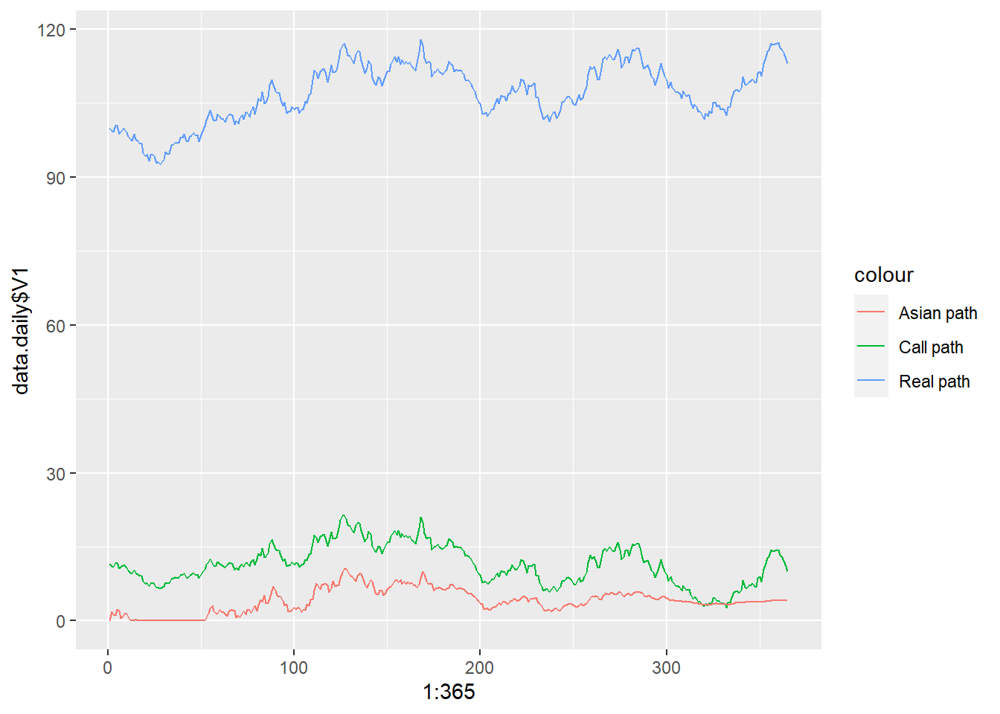
ggplot(,aes(1:365, call.path, color="Call Path"))+
geom_line()+
geom_line(aes(1:365, asian, color="Asian path"))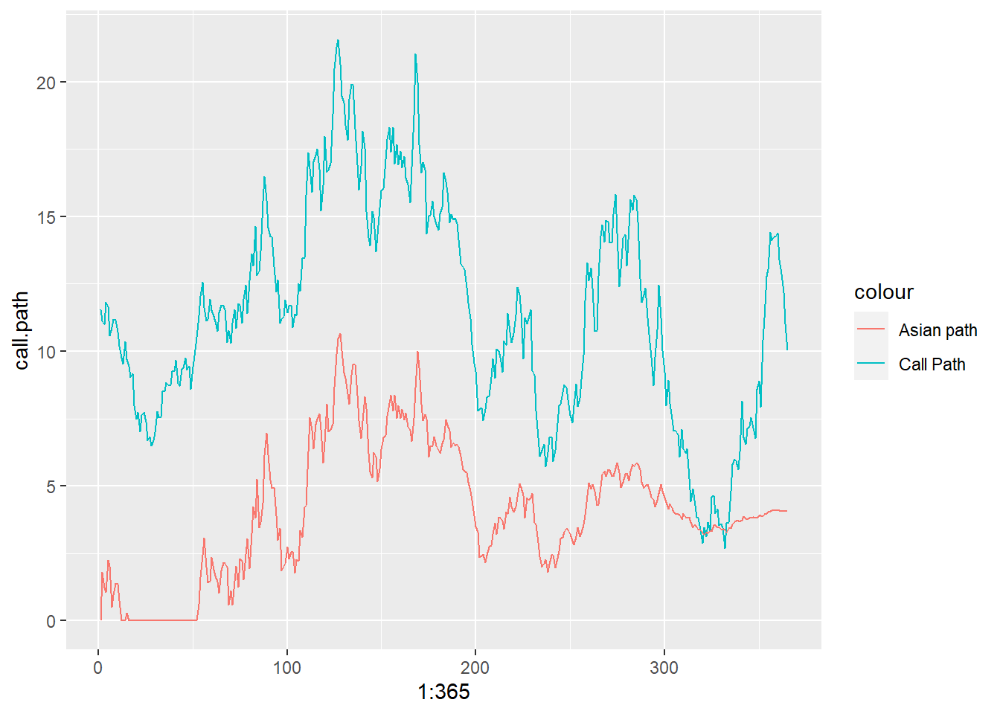
The first chart in the R code plots a realization of our stock’s path given an initial stock price of 100, volatility of 20% annualized, and a risk free rate (ie risk neutral drift) of 10%. Additionally, the plot shows the average price of the stock at maturity (time T) as well as the average price for each increment (t) prior to time T. As expected, the average at time t converges to the average over all observations at maturity.
The second graph plots the realization of the stock price, the realization of a vanilla call, and the realization of an asian call both with a strike of 103. The third graph plots just the value of the vanilla and asian call in order to allow for better visualization of the option price realizations. As can be seen, the value of the asian option has a lower value at inception and also displays lower volatility. Both of these make sense as the underlying function for the asian call is an averaging process that mutes the volatility of the value of the asian option. We would note, however, that the total return of the asian option is superior to that of the vanilla option given the stock price realization we have chosen. This is because our stock path did not move up meaningfully enough to be materially higher than the strike price + the initial cost of the option, whereas the average price of the stock ended substantially above the strike price plus the cost of the asian option (which was significantly lower).
library(data.table)
library(ggplot2)\[dr_t=b(a-r_t)dt+\sigma dB_t \\ t\epsilon[0, T]\]
steps<-1000
r_vec <- rnorm(steps)
r_path <- function(r0,b,a,sigma,T, N = steps) {
rt <- r0
for (i in 1:(N-1)) {
rt[i+1]<-(1/(1+b*(T/N)))*(rt[i]+b*a*(T/N)+sigma*sqrt(T/N)*r_vec[i])
}
return(rt)
}i <- 0
vector <- c(1,3,6,10)
rt_b <- as.data.table(matrix(ncol=length(vector),nrow=steps))
for (val in vector){
i <- i+1
rt_b[,i] <- r_path(r0 = 0.03,b = val,a = 0.05,sigma = 0.1,T = 5,N = steps )
}
colnames(rt_b) <- paste("b",vector,sep="=")
rt_b<-as.data.table(cbind("time"=1:steps,rt_b))
v_col <- rainbow(length(vector))ggplot(melt(rt_b,id.vars="time"),aes(time,value,colour=variable))+
geom_line()+
labs(x="transaction",y="rt",title="FIG 1A: Different b")+
geom_hline(yintercept = 0.05, alpha=0.6, linetype="dashed")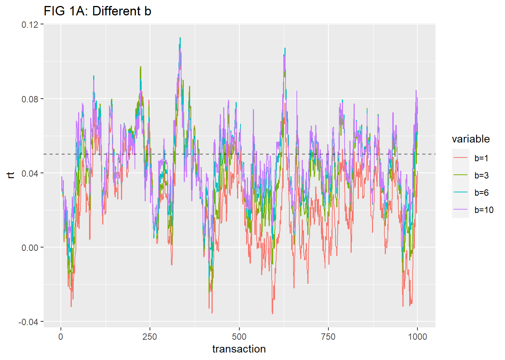
Using the Vasicek model, we plot realizations of paths of the spot interest rate using several graphs with varying parameters. In the graph 1A, we vary the ‘b’ parameter in the model (holding the other parameters constant), which sets the speed at which the short rate mean reverts to the long term rate. As can be seen in the graph, higher levels of b correspond to faster mean reversion and thinner tails in the the path of the short rate.
i <- 0
vector <- c(0.0,0.01,0.02,0.05,0.1)
rt_a <- as.data.table(matrix(ncol=length(vector),nrow=steps))
for (val in vector){
i <- i+1
rt_a[,i] <- r_path(r0 = 0.03,b = 6,a = val,sigma = 0.3,T = 5,N = steps )
}
colnames(rt_a) <- paste("a",vector,sep="=")
rt_a<-as.data.table(cbind("time"=1:steps,rt_a))ggplot(melt(rt_a,id.vars="time"),aes(time,value,colour=variable))+
geom_line()+
labs(x="transaction",y="rt",title="FIG 1B: Different a")+
geom_hline(yintercept = vector, colour=rainbow(5), alpha=0.5)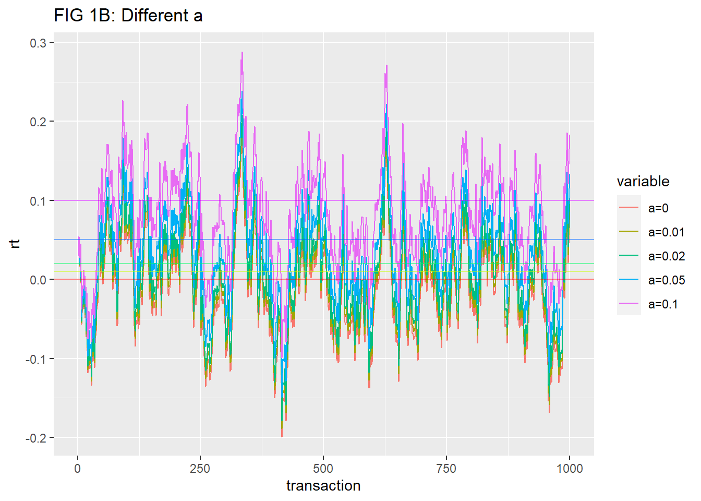
In graph 1B, we vary the ‘a’ parameter, which sets the drift of the short rate process. As can be seen, highest value of ‘a’ corresponds to the highest line in the graph, indicating a modest positive drift in the short rate over time.
i <- 0
vector <- c(0.1,0.2,0.4,0.6,0.9)
rt_s <- as.data.table(matrix(ncol=length(vector),nrow=steps))
for (val in vector){
i <- i+1
rt_s[,i] <- r_path(r0 = 0.03,b = 3,a = 0.05,sigma = val,T = 5,N = steps )
}
colnames(rt_s) <- paste("sigma",vector,sep="=")
rt_s<-as.data.table(cbind("time"=1:steps,rt_s))ggplot(melt(rt_s,id.vars="time"),aes(time,value,colour=variable))+
geom_line()+
labs(x="transaction",y="rt",title="FIG 1C: Different sigma")+
geom_hline(yintercept = 0.05, alpha=0.5)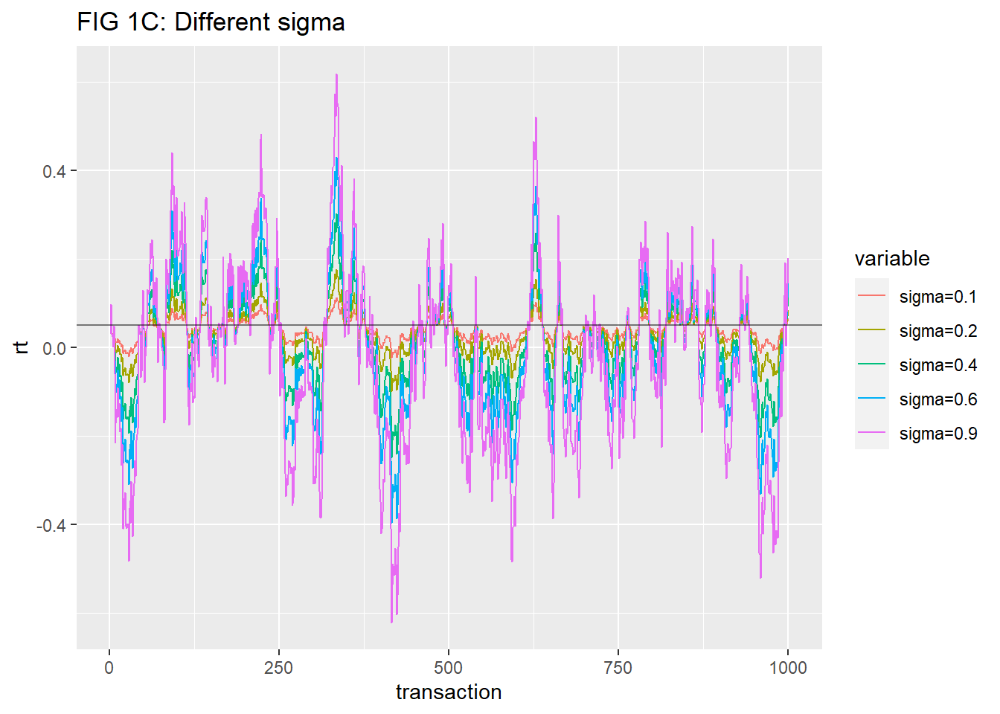
In graph 1C, we vary the volatility of the short rate process holding everything else constant. As expected, the higher volatility the process, the further the short rate diverges from its mean value.
i <- 0
vector <- c(0.5,1,3,5,8)
rt_t <- as.data.table(matrix(ncol=length(vector),nrow=steps))
for (val in vector){
i <- i+1
rt_t[,i] <- r_path(r0 = 0.03,b = 3,a = 0.05,sigma = 0.1,T = val,N = steps )
}
colnames(rt_t) <- paste("T",vector,sep="=")
rt_t<-as.data.table(cbind("time"=1:steps,rt_t))ggplot(melt(rt_t,id.vars="time"),aes(time,value,colour=variable))+
geom_line()+
labs(x="transaction",y="rt",title="FIG 1D: Different T")+
geom_hline(yintercept = 0.05, alpha=0.5)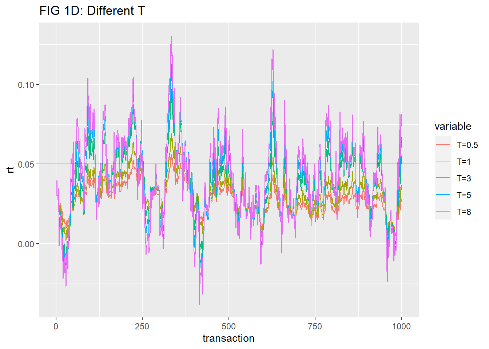
In graph 1D, we vary the T parameter which can be interpreted as the duration of the instrument. As can be seen from the graph, the volatility of the short rate process increases as T increases, which is the expected result as the volatility of fixed income instruments increases as their duration increases given there is more time for the path to diverge from the current value.
pt_path <- function(T,b,a,sigma,rt) {
t <- seq(0,T,length.out = steps)
pt <- c()
for (i in 1:steps){
pt[i] <- exp((((1/b^2)*(1/b)*(1-exp(-b*(T-t[i])))-T+t[i])*(b^2*a-0.5*sigma^2))-((sigma^2)/(4*b))*(1/b)*((1-exp(-b*(T-t[i])))^2)-rt[i]*(1/b)*(1-exp(-b*(T-t[i]))))
}
return(as.data.table(unlist(pt)))
}
#rt_a[,4] b= 3, a=0.02, sigma=0.3
pt_a <- pt_path(T=3,b = 3,a = 0.02,sigma = 0.3, rt=rt_a[,4])
#rt_a[,5] b=1.5 a=0.05 sigma=0.3
pt_b <- pt_path(T=3,b = 3,a = 0.05,sigma = 0.3, rt=rt_a[,6])
pt_ab <- cbind("time"=1:steps,pt_a,pt_b)
colnames(pt_ab)=c("time","b=3,a=0.02","b=3,a=0.05")ggplot(melt(pt_ab, id.vars="time"), aes(time, value,color=variable))+
geom_line()+
labs(title="T-Bond price", y="$")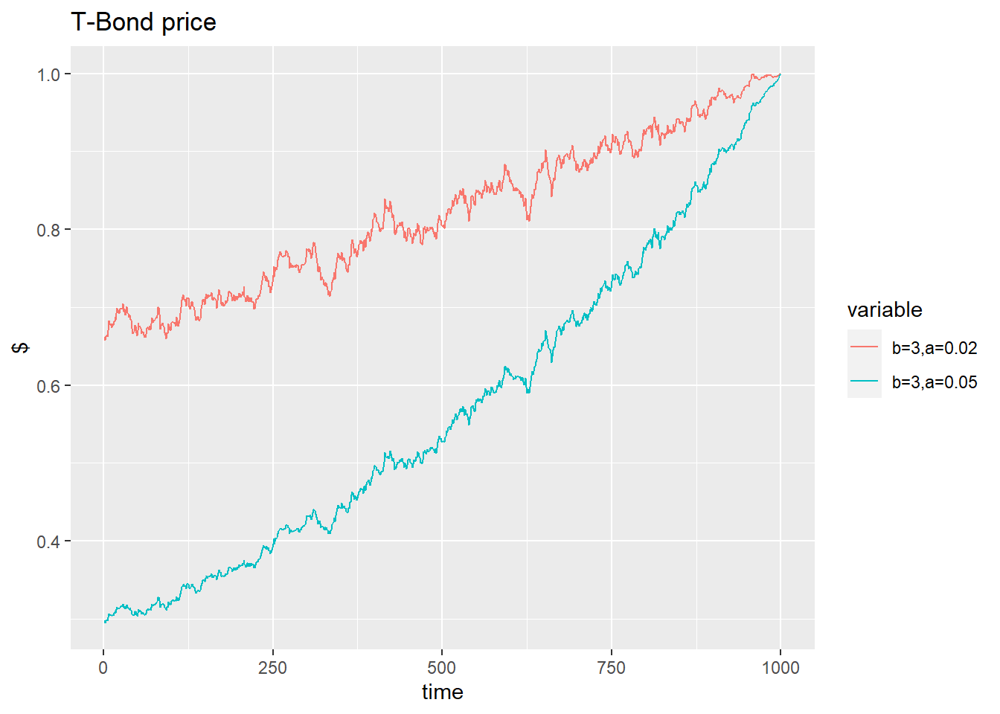
We next plot the price of a zero coupon bond with a 3 year maturity with varying parameters of a and b. As can be seen, higher values of a or b result in lower initial bond prices. This is because (all else equal) higher values of the long term mean interest rate result in higher discount rates over the life of the security, and faster mean reversion in discount rates also leads to higher discount rates over the life of the security (and thus lower initial prices).
pt_0_path <- function(T,b,a,sigma,r0) {
return (exp((((1/b^2)*(1/b)*(1-exp(-b*(T)))-T)*(b^2*a-0.5*sigma^2))-((sigma^2)/(4*b))*(1/b)*((1-exp(-b*(T)))^2)-r0*(1/b)*(1-exp(-b*(T)))))
}
pt_0.a<-c()
y0_T.a<-c()
for (i in 1:30) {
pt_0.a[i] <- pt_0_path(T = i,b = 0.6,a = 0.05 ,sigma =0.1,r0=0.03)
y0_T.a[i] <- -(1/i)*log(pt_0.a[i])
}
pt_0.b<-c()
y0_T.b<-c()
for (i in 1:30) {
pt_0.b[i] <- pt_0_path(T = i,b = 0.6,a = 0.1 ,sigma =0.1,r0=0.03)
y0_T.b[i] <- -(1/i)*log(pt_0.b[i])
}
y0_T<- as.data.table(cbind("time"=1:30,y0_T.a,y0_T.b))
colnames(y0_T)<-c("time","b=0.6,a=0.05,vol=0.1,r0=0.03","b=0.6,a=0.1,vol=0.1,r0=0.03")ggplot(melt(y0_T, id.vars="time"), aes(time, value,color=variable))+
geom_line()+
labs(title="Yield Curve", y="yield")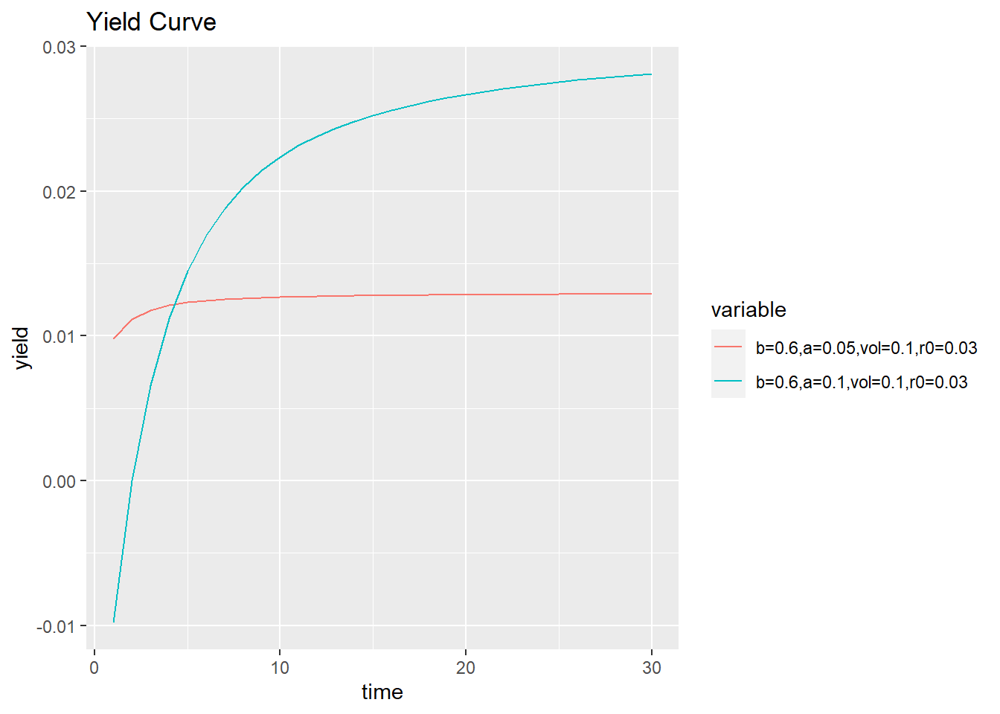
Finally, we plot the yield curve with different parameters of a and b to show the differing shape given by the parameters. As can be seen, the as the maturity extends the yield ultimately converges on the long term mean b with a controlling the speed of said reversion.